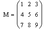

Displaying a Vector or Matrix |
There are two ways of displaying an evaluated vector or matrix. If an array has fewer than ten rows and columns, it displays in matrix form by default. For example:

Nested arrays appear as {m,n}, showing the size of the nested array.
| Output Tables |
If an array has 10 or more rows or columns, a portion of it displays as an output table, a scrolling spreadsheet of cells with row and column labels. By clicking on the output table, you can:
If you right-click on the top left corner of the table, you can use the resulting menu to:
| Choosing the display |
To change the display of array results to either an output table or a matrix:
Choose Result from the Format menu, or double-click on the array.
Set "Matrix display style" to "Matrix" or "Table." Click "Set as default" if you want all the arrays in your worksheet to be affected.
When you display a large vector or matrix as an array, only arrays of fewer than 600 elements are displayed. If the matrix is larger than that, the phrase BigMatrix{x,y} appears, where x and y are the dimensions of the matrix.
Nested arrays are shown in the same notation in both matrix form and output tables.
Long vectors and range variables both display using output tables. However, range variables have the row and column labels turned off by default, while vectors have the row and column labels turned on by default.